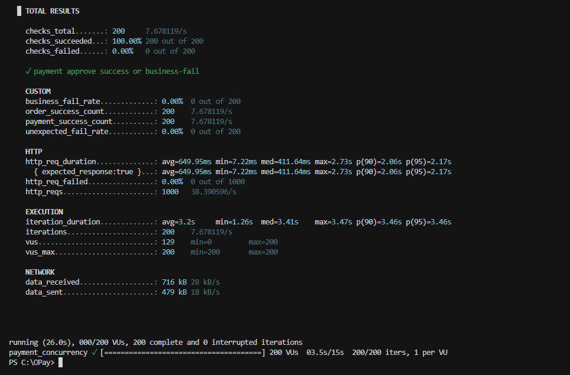
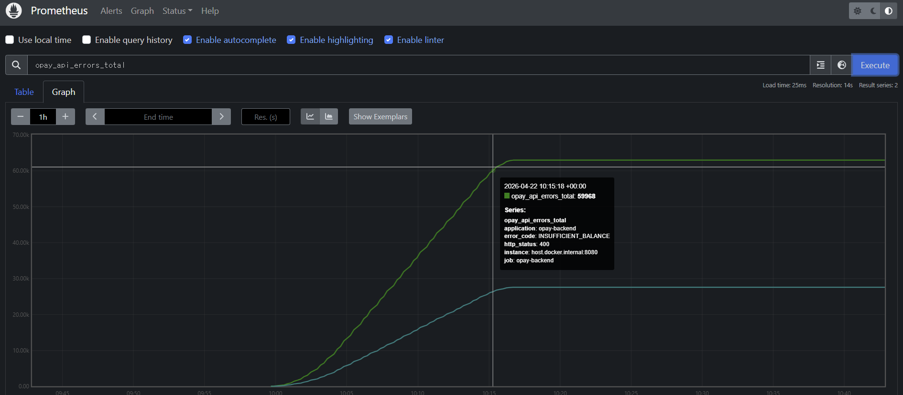

날짜 : 2026.04.06
제목 : AOP 커스텀 예외처리 구현
- 부하테스트 및 모니터링을 하던 도중 다음의 문제가 발생하였다.

- 이러한 결과는 단순히 "성공" or "실패"의 비율을 확인할 수는 있지만, "어떻게 실패"를 하는지를 알 수 없다.
- 결제 로직 특성상 재고 부족 또는 잔액 부족도 "실패"에 포함되기 때문에, 로직의 문제인지 단순 결제 실패인지 구분이 어렵다.
- 따라서 에러 및 예외 응답 구조 표준화를 진행할 필요성을 느꼈다.
전체적인 구조
[Service / Domain]
↓ throw
OpayApiException
↓
GlobalExceptionHandler
↓
ApiErrorResponse
↓
Clientpublic enum ApiErrorCode {
AUTH_REQUIRED("AUTH_REQUIRED", HttpStatus.UNAUTHORIZED, "인증이 필요합니다"),
AUTH_INVALID_CREDENTIALS("AUTH_INVALID_CREDENTIALS", HttpStatus.UNAUTHORIZED, "이메일 또는 비밀번호가 올바르지 않습니다"),
...
private final String code;
private final HttpStatus httpStatus;
private final String defaultMessage;
ApiErrorCode(String code, HttpStatus httpStatus, String defaultMessage) {
this.code = code;
this.httpStatus = httpStatus;
this.defaultMessage = defaultMessage;
}
public String getCode() {
return code;
}
public HttpStatus getHttpStatus() {
return httpStatus;
}
public String getDefaultMessage() {
return defaultMessage;
}
}- API 에러를 표준화하기 위해 ENUM을
코드 + HTTP 상태 + 기본 메시지로 묶어서 표준화하였다.
@Getter
public class ApiErrorResponse {
private final String errorCode;
private final String message;
public ApiErrorResponse(String errorCode, String message) {
this.errorCode = errorCode;
this.message = message;
}
public static ApiErrorResponse of(ApiErrorCode code, String message) {
String msg = (message != null && !message.isBlank()) ? message : code.getDefaultMessage();
return new ApiErrorResponse(code.getCode(), msg);
}
}- 클라이언트로 보내질 에러 DTO 형식
@Getter
public class OpayApiException extends RuntimeException {
private final ApiErrorCode errorCode;
private final HttpStatus httpStatus;
public OpayApiException(ApiErrorCode errorCode) {
super(errorCode.getDefaultMessage());
this.errorCode = errorCode;
this.httpStatus = errorCode.getHttpStatus();
}
public OpayApiException(ApiErrorCode errorCode, String message) {
super(message);
this.errorCode = errorCode;
this.httpStatus = errorCode.getHttpStatus();
}
public OpayApiException(ApiErrorCode errorCode, String message, Throwable cause) {
super(message, cause);
this.errorCode = errorCode;
this.httpStatus = errorCode.getHttpStatus();
}
public OpayApiException(ApiErrorCode errorCode, HttpStatus httpStatus, String message) {
super(message);
this.errorCode = errorCode;
this.httpStatus = httpStatus;
}
}- 비즈니스 에러를 표현하는 커스텀 예외
- Unchecked Exception의 예외처리를 위한
RuntimeException상속
@Slf4j
@RestControllerAdvice // 모든 @RestController에 적용
@RequiredArgsConstructor
public class GlobalExceptionHandler {
private final MeterRegistry meterRegistry; // Micrometer 기반 메트릭 수집
// 메트릭 수집
private void recordApiError(ApiErrorCode code, HttpStatus status) {
Counter.builder("opay.api.errors")
.description("GlobalExceptionHandler가 반환한 API 오류 건수")
.tag("error_code", code.getCode())
.tag("http_status", String.valueOf(status.value()))
.register(meterRegistry)
.increment();
}
// 비즈니스 예외 HTTP 응답으로 반환
@ExceptionHandler(OpayApiException.class)
public ResponseEntity<ApiErrorResponse> handleOpayApiException(OpayApiException ex) {
// 비즈니스 에러는 Warn으로 분류
log.warn("OpayApiException: code={} status={} message={}",
ex.getErrorCode().getCode(), ex.getHttpStatus(), ex.getMessage());
// 비즈니스 예외 메트릭 생성
recordApiError(ex.getErrorCode(), ex.getHttpStatus());
// HTTP 응답 생성
return ResponseEntity
.status(ex.getHttpStatus())
.body(ApiErrorResponse.of(ex.getErrorCode(), ex.getMessage()));
}
// 인증/토큰 예외 HTTP 응답으로 반환
@ExceptionHandler(JwtException.class)
public ResponseEntity<ApiErrorResponse> handleJwtException(JwtException ex) {
log.warn("JWT error: {}", ex.getMessage());
recordApiError(ApiErrorCode.AUTH_INVALID_ACCESS_TOKEN, HttpStatus.UNAUTHORIZED);
String msg = ex.getMessage() != null ? ex.getMessage() : ApiErrorCode.AUTH_INVALID_ACCESS_TOKEN.getDefaultMessage();
return ResponseEntity
.status(HttpStatus.UNAUTHORIZED)
.body(ApiErrorResponse.of(ApiErrorCode.AUTH_INVALID_ACCESS_TOKEN, msg));
}
@ExceptionHandler(MethodArgumentNotValidException.class)
public ResponseEntity<ApiErrorResponse> handleValidationExceptions(MethodArgumentNotValidException ex) {
String detail = ex.getBindingResult().getAllErrors().stream()
.map(error -> {
if (error instanceof FieldError fe) {
return fe.getField() + ": " + fe.getDefaultMessage();
}
return error.getDefaultMessage();
})
.collect(Collectors.joining("; "));
log.warn("Validation error: {}", detail);
recordApiError(ApiErrorCode.VALIDATION_ERROR, HttpStatus.BAD_REQUEST);
return ResponseEntity
.status(HttpStatus.BAD_REQUEST)
.body(ApiErrorResponse.of(ApiErrorCode.VALIDATION_ERROR, detail));
}
@ExceptionHandler(IllegalArgumentException.class)
public ResponseEntity<ApiErrorResponse> handleIllegalArgumentException(IllegalArgumentException ex) {
log.warn("IllegalArgumentException (미분류): {}", ex.getMessage());
recordApiError(ApiErrorCode.LEGACY_ILLEGAL_ARGUMENT, HttpStatus.BAD_REQUEST);
return ResponseEntity
.status(HttpStatus.BAD_REQUEST)
.body(ApiErrorResponse.of(ApiErrorCode.LEGACY_ILLEGAL_ARGUMENT, ex.getMessage()));
}
@ExceptionHandler(IllegalStateException.class)
public ResponseEntity<ApiErrorResponse> handleIllegalStateException(IllegalStateException ex) {
log.warn("IllegalStateException (미분류): {}", ex.getMessage());
recordApiError(ApiErrorCode.LEGACY_ILLEGAL_STATE, HttpStatus.CONFLICT);
return ResponseEntity
.status(HttpStatus.CONFLICT)
.body(ApiErrorResponse.of(ApiErrorCode.LEGACY_ILLEGAL_STATE, ex.getMessage()));
}
// DB Lock 충돌(DeadLock/TimeOut)을 감지, 원인 분석을 위한 예외
@ExceptionHandler(CannotAcquireLockException.class)
public ResponseEntity<ApiErrorResponse> handleCannotAcquireLock(CannotAcquireLockException ex) {
// 어떤 Thread에서 발생하는지, 어떤 메시지인지 포함
log.error(
"CannotAcquireLock (deadlock/lock timeout 등): thread={} message={}",
Thread.currentThread().getName(),
ex.getMessage(),
ex);
// root cause 추출
Throwable root = ex.getMostSpecificCause();
if (root != null && root != ex) {
log.error(" mostSpecificCause: {} - {}", root.getClass().getName(), root.getMessage());
}
for (Throwable t = ex; t != null; t = t.getCause()) {
if (t instanceof SQLException sql) {
log.error(
" SQLException: SQLState={} errorCode={} message={}",
sql.getSQLState(),
sql.getErrorCode(),
sql.getMessage());
}
}
recordApiError(ApiErrorCode.INTERNAL_SERVER_ERROR, HttpStatus.INTERNAL_SERVER_ERROR);
return ResponseEntity
.status(HttpStatus.INTERNAL_SERVER_ERROR)
.body(ApiErrorResponse.of(ApiErrorCode.INTERNAL_SERVER_ERROR, "서버 오류가 발생했습니다."));
}
// 위의 예외 이외에 예상치 못한 예외는 500 에러로 처리 -> 추후 에러 나오면 따로 분류
@ExceptionHandler(Exception.class)
public ResponseEntity<ApiErrorResponse> handleGenericException(Exception ex) {
log.error("Unexpected error: ", ex);
recordApiError(ApiErrorCode.INTERNAL_SERVER_ERROR, HttpStatus.INTERNAL_SERVER_ERROR);
return ResponseEntity
.status(HttpStatus.INTERNAL_SERVER_ERROR)
.body(ApiErrorResponse.of(ApiErrorCode.INTERNAL_SERVER_ERROR, "서버 오류가 발생했습니다."));
}
}-
현재
recordApiError()를 통해 예외가 발생한 API 요청마다 메트릭 수집 → 부하 테스트 중 어느쪽에서 예외 혹은 에러가 발생하는지 확인하기 위해 - ⚠️ 추후에 로직이 안정화되면 반드시 수정해야 함 → 트래픽 과다일 때 overhead가 커짐
⭐ handleCannotAcquireLock()
- DB 락 충돌(데드락/타임아웃)을 감지하고, 원인 분석을 위한 상세 로그를 남기면서, 클라이언트에 500 에러로 응답하는 특수 핸들러
@ExceptionHandler(CannotAcquireLockException.class)를 통해 DB 락 획득 실패를 감싸서 던지는 예외처리- 다음과 같은 시나리오의 메트릭 수집
Case 1
Thread A → row1 lock
Thread B → row2 lock
Thread A → row2 요청 (대기)
Thread B → row1 요청 (대기)
→ 서로 기다림
→ DB가 하나 죽임 (deadlock)
→ 예외 발생Case 2
Thread A → lock 잡고 오래 작업
Thread B → 기다림
→ timeout 초과
→ 예외 발생원인 파악 과정
// 1
Throwable root = ex.getMostSpecificCause();
if (root != null && root != ex) {
log.error(" mostSpecificCause: {} - {}", root.getClass().getName(), root.getMessage());
}
for (Throwable t = ex; t != null; t = t.getCause()) {
if (t instanceof SQLException sql) {
log.error(
" SQLException: SQLState={} errorCode={} message={}",
sql.getSQLState(),
sql.getErrorCode(),
sql.getMessage());
}
}-
예외 체인 중 가장 마지막(가장 깊은) Throwable 반환
CannotAcquireLockException ↓ cause PessimisticLockingFailureException ↓ cause SQLException ← 이게 진짜 원인 - 조건 체크: NPE 방지 및
root != ex를 통한 중복 로그 방지 -
예외 체인 전체 순회
ex → cause → cause → cause → ... → null단방향 탐색if (t instanceof SQLException sql)로 DB 관련 예외만 추출
Prometheus 메트릭 수집 결과

- API 에러 응답이 정상적으로 보이는 모습